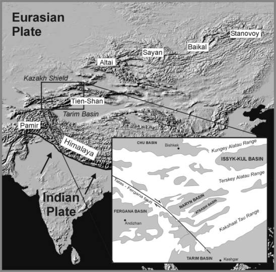
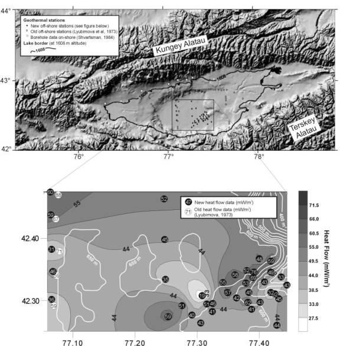
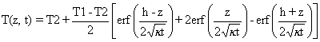
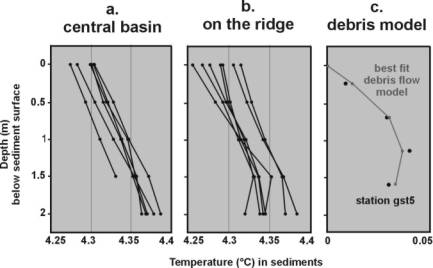
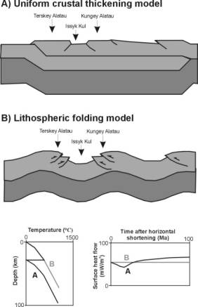

|
Lake Issyk Kul (Tien
Shan): Unusually low heat-flow in an active intermontane basin 1Renard
Centre of Marine Geology, University of Ghent, Krijgslaan 281 S8, B-9000 Ghent,
Belgium. 2Department
of Geology and Mineralogy, Royal Museum for Central Africa, Leuvensesteenweg
13, B-3080 Tervuren, Belgium. 3Institute
of Geophysics SB RAS, Novosibirsk, 630090, Russia. Abstract New geothermal data are presented for Lake Issyk Kul, a mountain lake in
the northern Tien Shan, Central Asia. With 40 successful measurements done, the
average heat-flow is 48.3 mW/m2. This is 10 to 20 mW/m2
lower than estimates from previous surveys. Data from bore holes on the shores
of the lake revealed an average heat-flow of 54.4 mW/m2. All these
values are remarkably low for an actively deforming area such as the Tien Shan.
Two qualitative geodynamical models are suggested to explain these
observations. If there is crustal thickening beneath Issyk Kul, the low heat-flow
can only be explained in a transient mode, with 'sawtooth geotherm'. In
equilibrium conditions, low heat-flow implies that there is little or no
crustal thickening under the basin. This feature could be the result of
lithospheric folding, as may occur throughout Central Asia. Introduction The intermontane Issyk Kul Basin is located in the
northern Tien Shan, one of the world's major intracontinental mountain ranges.
The Tien Shan reach from the Kyzyl Kum desert in the west to the Gobi desert
and Mongolia in the east. The active deformation of the Tien Shan can account
for approximately 20 mm of accumulated shortening per year (Abdrachmatov et
al., 1996). Several major strike-slip faults as the Talas-Fergana fault have
been active in the Cainozoic. Thus the current tectonic context is one of
transpression. The Cainozoic deformation is commonly attributed to the
indentation of Central Asia by India (Molnar and Tapponnier, 1975). The
mountain range can be considered as a complex zone of weakness 'squeezed out'
between the Tarim basin in the south and the Kazakh Shield in the north. The
Tien Shan consist of a number of fold belts with E-W direction, perpendicular
to the direction of maximum compression. These belts are separated by
relatively flat intermontane basins such as, Naryn Basin, Fergana Basin, and
Issyk Kul Basin (Fig. 1). Located in Eastern
Kyrghyzstan at an altitude of 1606m, Lake Issyk Kul is characterized by a deep
(668m) central basin with a flat bottom, which occupies 25% of the lake area
(Fig. 2). In the eastern part of this deep basin floor exists a ridge like
structure, which is the morphological expression of an active anticlinal fold,
as shown by reflection seismic profiles (Imbo, 1998). Lake Issyk Kul is
thermally stratified. This was confirmed by 11 CTD profiles which were recorded
throughout the lake in the framework of this research project. At the
deepest parts of the lake a constant temperature of 4.177°C was measured. Due to these quiet conditions, Issyk
Kul is particularly well fit for marine-type heat-flow measurements as a new
input in the discussion of intracontinental deformation in general and in the
Tien Shan in particular. In this paper we present an extensive new
heat-flow dataset from the deep lake area. We will show that in the deep basin
a uniform and low heat-flow is observed, except for several disturbed thermal
gradients on an anticlinal ridge in the southeastern part. This background
heat-flow puts new constraints on geodynamical models of the Issyk Kul region.
We will discuss two geodynamical models that explain the new thermal data in
the framework of present knowledge on the crustal and lithospheric structure of
the Tien Shan and other orogenic systems.  Fig. 1 Location of
the Tien Shan mountain ranges in the active Central Asian deformation zone.
Inset: location of Issyk Kul basin within Tien Shan. Shaded relief map from
USGS files. Previous geothermal studies. Heat-flow estimates in
bore holes surrounding the lake, were made by Shvartsman (1984, 1988).
Boreholes have been drilled to depths of 200 up to 4900 m, some of them
reaching the Palaeozoic basement beneath the Cainozoic sediments. Thermal
conductivity (λ) of the Cainozoic rocks and the basement rocks average
respectively 2.05 and 2.50 W/m/K. The heat-flow estimates are presented with an
accuracy of 15 to 20 %, and corrections were made for relief, sedimentation and
Quaternary glaciations. The mean heat-flow on-shore is 54.4 mW/m2,
and the range is from 14 to 78 mW/m2 (Table 2). Within the limits of the
lake, geothermal measurements were carried out by Soviet scientists between
1969 and 1972 (Lyubimova et al., 1973). The geothermal conductivity of the
sediments and the mean geothermal gradient in the sediment layer of 1-1.5 m
were measured by means of an autonomous thermoprobe at water depths of 115 to
660 m. Stations were located along three N-S profiles. Only the central
one crossed the flat deep basin, whereas the other two were situated along the
slopes (Fig. 2). The heat-flow pattern shows rather stable values on the flat
basin floor of about 60-70 mW/m2 (Table 2), while along the slopes
large variability exists. λ = 0.9-1.4 W/m/K.  Fig. 2Morphology of Issyk Kul basin (De Batist et
al., 2002), and location of on-shore bore holes and off-shore marine-type
thermal stations in Lake Issyk Kul. Inset: Contour map of the heat-flow on the
flat bottom of Lake Issyk Kul based on the new thermal data. New heat-flow measurements. A total number of 49
heat-flow measurements were carried out using GEOS-T, a 'violin bow'-design
geothermal probe with online temperature registration at 4 depth intervals. The
efforts were concentrated on the lake's central basin where quiet sedimentation
conditions and thermal stratification of the water body allow the surface
heat-flow to approximate the background heat-flow value. The central Issyk Kul
basin has very little relief, except for an anticlinal ridge, which is allegedly
associated with tectonic activity (Cobbold et al., 1994; Imbo, 1998) and thus
forms a potential site for local heat-flow anomalies. At forty stations,
satisfactory penetration conditions were encountered for the probe to register
thermal gradients at depth intervals of 0.5 m to an accumulated depth of 2
m. Thirty-one stations were collected on the anticlinal ridge, the other
nine were placed in the flat part of the central basin (Fig. 2). The
ridge area generally featured the best penetration conditions. In the central
basin, four stations only had 3/4 penetration (1.5 m depth) because the
sediments there were more compact. Sediments near the lakeshore were mostly
coarse and too hard to penetrate. The average value of all
40 gradient measurements is 38.8°C/km, with a standard deviation of 11.1°C/km
and standard error (95 % percentile) of 3.5°C/km (Table 1). The gradient
varied between 24°C/km and 62°C/km. The highest values were obtained on the
ridge, but no strong anomalous features could be delimited. The nine stations
on the flat area (off the ridge) give an approximately identical average
gradient of 38.0°C/km. A contour map of the geothermal gradient based on the
new data is presented in figure 2. At five stations, gravity cores were
taken for thermal conductivity determinations by means of a needle probe. A
constant value of λ = 1.1 W/m/K was measured. Non-linear temperature
gradients southeast on the ridge At most of the 40 measurement stations, temperatures
increase linearly with depth, indicating a thermal steady state. A few
stations, however, are characterized by curved temperature gradients. In two
stations we even encountered negative gradients between 1.5 and 2m depth. All
of these stations were located south of the anticlinal ridge, in the
southeastern part of the central Issyk Kul basin (Fig. 3b). This is also the
area where the penetration of the GEOS-T probe was the most difficult. We
cannot explain this behaviour by a thermal steady state. One gravity core was
taken near to the geothermal station with the strongest temperature signal, and
confirms this hypothesis. It shows a debris flow deposit of 30 cm thickness,
characterized at its base by a coarsening upwards sequence. The lowest cm of
the layer consists of sandy material, which is indicative of a shallow depth
origin of the sediment. To model the effect of such a debris flow on a shallow
thermal gradient we use an equation, developed for describing the evolution of
temperature with depth and time in a halfspace with initial temperature T2,
after sudden deposition of a hot layer with thickness h and temperature T1. It
is assumed that the diffusivity of both materials is the same (Buntebarth,
1984).

(1) The variables in this equation are the time (t) elapsed
since deposition of the slump, the diffusivity (k) of the sediments, which is considered to be the same
for both the slump and the original sediments, the temperature offset (T2) and
the thickness (h) of the slump. For heat-flow station no. 5, h is given by the
core. We can now fit (1) to the data and reduce the rmse from 0.039 to 0.004
with a slump of 2K-temperature elevation occurring 23 days before the
measurement.  Fig. 3 Example of
thermal gradients in the sediments of Lake Issyk-Kul. Non-linear gradients are
observed to the southeast on the ridge. Discussion: Background
heat-flow of the central basin (excluding the southeastern part) However,
as said, non-linear temperature profiles only occur locally southeast of the
ridge, which is observed in the otherwise flat central basin. The rest of this
basin is characterized by uniformly linear temperatures (Fig 3a), so that the
assumption of an at least short-term thermal steady state seems to be
justified. One of the conclusions of the heat-flow work by Lubimova (1973) and
Shvartsman 1984) was that there exists a partitioning of the Issyk Kul basin in
an eastern and a western part. We do not know of any corroborating evidence for
this hypothesis, and we do not observe such a pattern in our data. However, our
data do not span a large distance in an east-west direction, and thus do not
yield much insight in this matter. As will be discussed later, our tectonic
model does not involve any basin asymmetry in a longitudinal sense. The effect of the
topography on the thermal gradient was estimated using a method developed by
Lachenbruch (1968). It was found to be maximally 5% of the measured value.
Another effect is that of uniform sedimentation, which lowers heat-flow.
2 Piston cores of maximum 4.3 m length studied by Rasmussen, (2000) yield an
average sedimentation rate of 0.6 mm/y to 0.2 mm/y, the former value being
taken at 230 m depth and the latter at 470 m. Since our heat-flow
measurements were taken further in the basin at even greater depths (>600
m), the sedimentation rate is likely to be even smaller. We will use the value
of 0.2 mm/y for the sedimentation rate as an upper bound and choose an
arbitrary value of 0.1 mm/y as a lower bound. Using these values and applying a
method used by Von Herzen and Uyeda (1963), the lowering effect of constant
sedimentation on heat-flow ranges from 5 to 20%. Alluvial terraces in and around the lake witness of
substantial fluctuations of the lake level throughout the Quaternary of up to
100 m amplitude (Kvasov and Seliverstov, 1960). These changes have mostly
affected the deposits on the lakes slopes, rather than the distant depositional
environments of the central basin. Again, the cores taken by Rasmussen (2000)
represent a 'worst case scenario'. Evidence of frequently occurring distant
turbidites can be seen, but as discussed for the non-linear gradients south of
the ridge, such events have an only short thermal lifespan. Transient
equilibrium is rapidly restored and we can consider the sedimentation rate of
maximum 0.2 mm/y to be continuous. Correcting for the effects of topography and
sedimentation increases the measured heat-flow by at most 10 mW/m2,
bringing the estimated average heat-flow of the central basin to a value of
48.3 mW/m2. This is 10 to 20 mW/m2 smaller than five
estimates on the flat lake bottom from the early seventies (Lyubimova et al.,
1973). We believe that the discrepancy could be attributed to a larger
instrumental error by the device used by Lyubimova back in the late sixties and
early seventies (Lyubimova and Shelyagin, 1966; Lyubimova et al., 1973). The
error they reported on the heat-flow data is 15-20%, compared to 5-10% for the
GEOS-T probe used for the new measurements. Moreover, comparison of heat-flow
data from Lake Baikal obtained by different teams and over a period of more
than 30 years, shows that the pioneering technique used by Lyubimova (Lyubimova
and Shelyagin, 1966) returned heat-flow values systematically larger than later
measurements (Duchkov et al., 1976; Golubev, 1982; Poort, 2000), by the same
amount as reported here. Therefore, we have reason to believe that the previous
data published for Lake Issyk Kul were biased towards too large values, and
should be treated with caution. As an explanation for the non-elevated heat flow,
transient behavior as a result of global climatic change can be ruled out. The
bottom temperature of lake Issyk Kul currently is 4oC (De Batist et
al., 2002), which corresponds to the maximum density of water. It is not
possible that a colder surface temperature in the past would have completely
filled the lake, which is 600m deep, with ice. Colder surface water would
simply float on the 4oC warm bottom water and not affect the
sediment temperature and heat flow. If topography, sedimentation, and climate
change cannot explain the observed heat flow of the Issyk Kul basin, we have to
conclude that tectonic factors are in control. The low to normal heat-flow values of our survey show a
heat-flow behaviour in the Cainozoic Issyk Kul ramp basin that is completely
different from that of rifts, which are generally characterised by elevated
heat-flow. Low to normal heat-flowmightbe a fundamental particularity of intermontane basins
such as Issyk Kul. It also puts an important constraint on geodynamical models
of the Tien Shan.  Fig. 4 A- If
uniform crustal thickening occurs under the Issyk Kul Basin (top part of the
figure), this will initially cause the surface heat flow to decrease as the
'stacking geotherm' (black curve in the lower left part of the figure)
re-equilibrates. However, thickening the crust will increase radioactive heat
production, and, eventually, the heat-flow will increase along with it. This
evolution of the heat flow with time is shown by the black curve on the lower
right part of the figure. B- The lithospheric folding model (middle part of the
figure) does not involve uniform crustal thickening. Subsequently, it does not
change the geotherm, nor cause an increase of the equilibrium heat-flow (gray
curves on the lower part of the figure). Geodynamical models The style of deformation
in the Tien Shan is still controversial. Some authors prefer crustal thickening
(e.g. Dewey et al., 1989), whereas others favour strike-slip faulting and
lateral extrusion accompanied with rotations around vertical axes (Cobbold and
Davy, 1988; Tapponnier et al., 1982, Thomas et al., 1993). Most
sedimentary basins of the Tien Shan are considered to be ramp basins, i.e.
bounded by (transpressional) reverse faults, which have been involved in recent
activity and historical earthquakes (Cobbold et al., 1994). Other examples of
ramp basins can be found in the Andes (Cobbold, 1993, 1996). Issyk Kul is
a typical ramp basin, too, bounded both in the north and the south by thrust
zones with basinward vergence (Cobbold et al., 1994). Basic faults are
the Kemin and Chylik faults in the north and the Terskey fault in the
south. Within the lake, the deep central basin appears to be delimited by
normal faults of NE, NW and sublatitudinal direction. (Trofimov et al, 1991;
Abdrakhmatov pers. comm.) How can the low heat-flow in the Issyk Kul basin be
understood in this geodynamic context with thrust and normal faulting, crustal
thickening (Burov et al., 1990) and a possibly anomalous hot upper mantle
(Vinnik and Saipbekova, 1984; Roecker et al., 1993)? There do not exist that
many intermontane basins with the same amount of heat-flow data to compare
with. The Andes may provide some analogous tectonic settings. We propose two
geodynamical models that may account for the observed surface thermal boundary
conditions in the Tien Shan and comparable settings: the 'uniform crustal
thickening' and the 'lithospheric folding' models (Fig. 4). 'Uniform crustal thickening'
model The deformation of the mountain range is dominated by
thrusting. Horizontal shortening is almost entirely accommodated by crustal
thickening, which is thought to occur uniformly across the Tien Shan (e.g.
Abdrakhmatov et al., 1996). In conditions of thermally steady state, we expect
a uniformly thickened crust to result in an elevated heat-flow through an
increased contribution of radioactive decay. Since we do not observe an
elevated heat-flow, if we want to preserve our hypothesis of uniform crustal
thickening, we must conclude that the Issyk Kul Basin is not in a thermally
steady state. According to the 'stacking' model, the activity of thrust faults
brings warm material from the deeper crust on top of cold material that was
originally near the earth's surface. This results in a non-steady state
'sawtooth'-geotherm (Midgley and Blundell, 1997). In a first stage, heat is
transferred from the lower, hot part of the upper thrust sheet, to the
underlying, colder material. Therefore, less heat-flows to the upper surface.
After this initial lowering of the surface heat-flow, the situation gradually
returns to normal, and eventually reaches a steady state, which, thus, is
associated with higher heat-flow than before the crustal thickening (Fig. 4).
This 'stacking' model has been proposed to explain low heat-flow values in the
Andes (Springer and Forster, 1998). It seems not to be by coincidence that the
Andes are often considered to be the best geodynamic analogue to the Tien Shan
(Cobbold, 1993, 1996). 'Lithospheric folding' model
with ramp basins The 'stacking' model can explain the relatively low
heat-flow of the Issyk Kul basin as being a transient phenomenon. The two
conditions for non elevated heat-flow in thermal steady state are 1) a
non-thinned lithosphere, to prevent an increase of asthenospheric convective
heat input, and 2) a non-thickened crust, which would yield extra radioactive
heat. Both of these conditions are fulfilled by the model of lithospheric
folding (Burov et al., 1990, Cobbold and Davy, 1988) . Gravimetric measurements
show a periodicity with wavelengths 50, and 300-360 km (Burov, 1993). This
corresponds to the large-scale topographic features of Central Asia. Thus,
lithospheric folding could explain the location of e.g. Lake Balkash in
Kazakhstan, but also Lake Issyk Kul, which would then be part of the same
'wavelet' as the Chu Basin (Burov, 1993; Nikishin et al, 1993). Thus, Issyk Kul
would be situated in the trough of a sinusoidal lithospheric fold. The
culminations of the fold would then correspond to the Terskey and Kungey
mountain ranges. If horizontal shortening causes the lithosphere to fold, no
major lithospheric thinning is required. This fulfils the first condition for a
steady state explanation of the non-elevated heat-flow (Fig. 4). The second
condition (no uniform crustal thickening) is also fulfilled, since the model
predicts thrusting to occur from the ridges to the troughs, so that an increase
in radioactive heat production is only confined to the mountain ranges. Another factor, which
most likely comes into play, is hydrological drive. 40% Of the lake's water
input is thought to be groundwater (Lyons et al, 2001). Hydrologic effects on
heat-flow are known to often have a large spatial variability. This is not
observed for the measurement stations located in the central lake basin.
Groundwater effects will however most likely be at least partially responsible
for the wider range of heat-flow values observed on-shore. The standard
error of the land data is 6.8 mW/m2, as compared with 2.3 mW/m2
for the new data. Conclusions New heat-flow data at the bottom of Lake Issyk Kul show
an average flux of 48± 2 mW/m2. Such a low heat-flow is
not what we would expect in an actively deforming tectonic environment.
Furthermore, the Tien Shan is associated with crustal thickening and thus
expected to display an increased surface heat-flow. Similar non-elevated
heat-flow in a tectonic setting of crustal shortening and thickening has been
observed in the Andean Chaco foreland basin. Hence, low to normal heat-flow may
be a fundamental particularity of intermontane basins. Two geodynamical models
can account for the observed thermal conditions. If there is crustal thickening
beneath Issyk Kul, the low heat-flow can only be explained in a transient mode,
as described by a stacking model with 'sawtooth geotherm'. In equilibrium
conditions, low heat-flow implies that there is no or only minor crustal
thickening under the basin. This feature could be the result of
lithospheric folding, as occurs throughout Central Asia. This phenomenon can
lead to differential crustal thickening between the culminations of the folds
(e.g. Terskey & Kungey Alatau ranges), with respect to the troughs (Issyk
Kul), which are thus not affected by an increased amount of radioactive heat. Table 1 List of all
new thermal gradient and heat-flow values on the bottom of Lake Issyk Kul.
Table 2 Summary of
the old Russian data: land locations
(Shvartsman, 1984), and off shore locations in the central basin (Lyubimova,
1973)
Acknowledgements The research was funded by the
Belgian Federal Office for Scientific, Technical and Cultural Affairs (OSTC),
and J. Poort was supported by a grant offered by the Flemish Institute for
support of Scientific and Technological research in the industry (IWT). References Abdrachmatov K.Y., Aldazhanov,
S.A., Hager, B.H., Hamburger, M.W., Herring, T.A., Kalabaev, K.B., Makarov,
V.I., Molnar, P., Panasyuk, S.V., Prilepin, M.T., Reilinger, R.E., Sadybakasov,
I.S., Souter, B.J., Trapeznikov, Y.A., Tsurkov, V.Y., and Zubovich, A.V., 1996.
Relatively recent construction of the Tien Shan inferred from GPS measurements
of present-day crustal deformation rates. Nature, 384, 450-453. Burov, E.V., M.G. Kogan, H.
Lyon-Caen, and P. Molnar, 1990. Gravity anomalies, the deep structure, and
dynamic processes beneath the Tien Shan, Earth Planet. Sci. Lett., 96, 367-383,
1990. Burov E.B., Lobkovsky L.I.,
Cloetingh, S., and Nikishin, A.M. (1993). Continental lithosphere folding in
Central Asia (Part II): constraints from gravity and topography.
Tectonophysics, 226, 74-87. Buntebarth, 1984. Geothermics,
an introduction.Springer Verlag, Berlin
Heidelberg. Cobbold, P.R., Sadybakasov, E.,
Thomas, J.C., 1994. Cainozoic transpression and basin development, Kyrghyz Tien
Shan, Central Asia. In: Geodynamic Evolution of Sedimentary Basins,
InternationalSymposium, Moscow (F. Roure, N. Ellouz, V. S. Shein, I. Skvortsov,
eds), pp. 181-202. Cobbold, P.R., Davy, P., Gapais, D., Rossello, E.A.,
Sadybakasov, E., Thomas, J.C., Tondji Biyo, J.J. and Urreiztieta, M., 1993.
Sedimentary basins and crustal thickening. Sedimentary Geology, 86:
77-89. Cobbold, P.R., 1996. Active
tectonics of Central asia and South America; similarities and differences. In:
GSA 1996 Annual Meeting, Boulder, CO, Abstracts with programs - GSA 28, 7, pp.
111-112. Cobbold P.R., and Davy P.H.,
1988. Indentation tectonics in nature and experiment. 2. Central Asia. Bull.
Geol. Inst. Univ. Uppsala, N.S. 14, pp. 143-162. De Batist, M., Imbo, Y.,
Vermeesch, P., Klerkx, J., Giralt, S., Delvaux, D., Lignier, V., Beck, C.,
Kalugin, I. and Abdrakhmatov, K.E. (2002). Bathymetry and sedimentary
environments of Lake Issyk-Kul: a large, high-altitude, tectonic lake. In: Lake
Issyk-Kul: its Natural Environment, J. Klerkx & B. Imanackunov (eds.), NATO
Science Series IV. Earth and Environmental Sciences, 13: 101-121. Dewey, J.F., Cande, S., and
Pitman, W.C., 1989. Tectonic evolution of the India/Eurasia collision zone.
Eclogea Geologica Helveticae, 82, 3, 717-734 Duchkov, A.D., Kazantsev, S.A.,
Golubuv, V.A., Lysak, S.V., and Khaikovskii, E.S., 1976. The heat-flow within
Lake Baikal. Soviet Geol. Geophys., 17: 92-99. Golubev, V.A., 1982. Geothermics of Baikal. Nauka,
Novosibirsk, 150 pp. (in Russian) Imbo, Y., 1998. Study of the
evolution of the Issyk Kul basin (Tien Shan, Kyrgyzstan) based on
high-resolution reflection seismics. Licentiate thesis, Academic year
1997-1998, University of Ghent. Kvasov, D. D. and Seliverstov,
J. P., 1960.Quelques problèmes de la
paléogéographie du bassin Issik-Coul. Oeuvres du laboratoire des lacs de
l'Academie des Sciences de l'URSS.Moscow-Leningrad,
10, 45-54. Lachenbruch, A.H., 1968. Rapid estimation of the
topographic disturbance to superficial thermal gradients. Rev. Geophys., 6,
365-400. Lyubimova, E.A., Aleksandrov,
A.L., and Duchkov, A.D., 1973. Methods of Heat-flow Investigation Through the
Ocean Bottom. Nauka, Moscow, 176 pp. (in Russian) Lyubimova, E.A., and Shelyagin,
V.A., 1966. Heat-flow through the bottom of Lake Baikal. Trans. (Dokl.) Russian
Acad. Sci., 171: 25-28. Lyons, W.B., Welch, K.A., Bonzongo,
J.-C., Graham, E.Y., Shabunin, G., Gaudette, H.E., and Poreda, R.J., 2001. A
preliminary assessment of the geochemical dynamics of Issyk-Kul Lake,
Kirghizstan. Limnol. Oceanogr., 46(3), 213-218. Midgley, J.P., and Blundell,
D.J., 1997. Deep seismic structure and thermo-mechanical modelling of
continental collision zones. Tectonophysics, 273, 155-167. Molnar, P., and Tapponnier, P.
,1975. Cainozoic tectonics of Asia: effects of a continental collision.
Science, 189, 4201, 419-426. Nikishin, A.M., S. Cloetingh,
L.I. Lobkovsky, E.B. Burov, and A.C. Lankreijer, 1993. Continental lithosphere
folding in Central Asia (part I): constraints from geological observations,
Tectonophysics, 226, 59-72. Poort, J., 2000. Significance
of the surface heat-flow in the Baikal rift; inferences from spatial heat-flow
analysis and numerical modelling. Ph.D. thesis, Free University of Brussels. Rasmussen, K.A., Ricketts,
R.D., Johnson, T.C., Romanovsky, V.V., and Grigina, O.M., 2000. An 11,000-year
history of Central Asian paleoclimate change recorded in deep sediments of Lake
Issyk Kul, Kyrgyzstan. GSA 1998 Annual Meeting, Boulder, CO, Abstracts with
Programs - GSA, 30, 7, pp. 309. Roecker, S.W., Sabitova, T.M.,
Vinnik, L.P., Burmakov, Y.A., Golvanov, M.I., Mamatkanova, R., and Munirova,
L., 1993. Three-dimensional elastic wave velocity structure of the western and
central Tien Shan. J. Geophys. Res., 98, 15779-15795. Shvartzman, Y.G., 1984. Thermal
fields of the Kyrghyz Tien Shan. In: Geological-Geophysical Study of Seismical
Zones, pp. 100-119. Ilim, Frunze, (in Russian). Shvartsman, Y.G., 1988. Thermal regime of the Issyk
Kul depression. In: Geothermal investigations on the bottom of aquarium,
pp. 35-41. Moscow, Nauka (in Russian). Springer M., and Forster A.,
1998. Heat-flow density across the Central Andean subduction zone.
Tectonophysics, 291, 123-139. Tapponnier, P., Peltzer, G., Le
Dain, A.Y., Armijo, R., and Cobbold, P., 1982. Propagating extrusion tectonics
in Asia: new insights from simple experiments with platicine. Geology, 10,
611-616. Thomas, J.-C., Perroud, H.,
Cobbold, P.R., Bazhenov, M.L., Burtman, V.S., Chuvin, A., and Sadybakazov, E.,
1993. A Paleomagnetic study of Tertiary Formations from the Kyrgyz Tien-Shan
and Its Tectonic Implications. J. Geophys. Res., 98: 9571-9589. Trofimov, A.K., Drushits, V.A.,
and Meskheteli, A.B., 1991. Issyk Kul Lake; principal features of geological
structure and development of lake basins. In: History of the Sevan, Issyk Kul,
Balkhash, Zaisan and Aral lakes (Treshnikov, A.F., ed.), pp. 57-67. Nauka
Leningrad. Vinnik and Saipbekova, 1984.
Structure of the lithosphere and the asthenosphere of the Tien Shan. Annales
Geophysicae, 2, 6, 621-626. Von Herzen, R.P. and Uyenda, S., 1963. Heat-flow through
the eastern Pacific ocean floor. J. Geophysical Res., 4219-4251. | ||||||||||||||||||||||||||||||||||||||||||||||||||||||||||||||||||||||||||||||||||||||||||||||||||||||||||||||||||||||||||||||||||||||||||||||||||||||||||||||||||||||||||||||||||||||||||||||||||||||||||||||||||||||||||||||||||||||||||||||||||||||||||||||||||||||||||||||||||||||||||||||||||||||||||||||||||||||||||||||||||||||||||||||||||||||||||||||||||||||||||||||||||||||||||||||||||||||